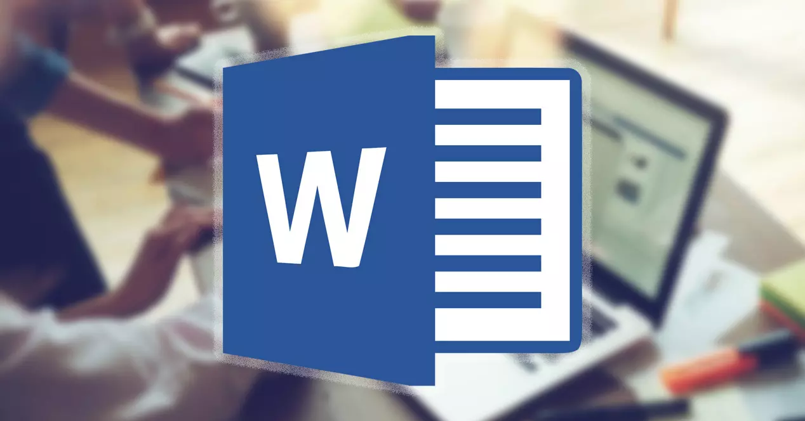
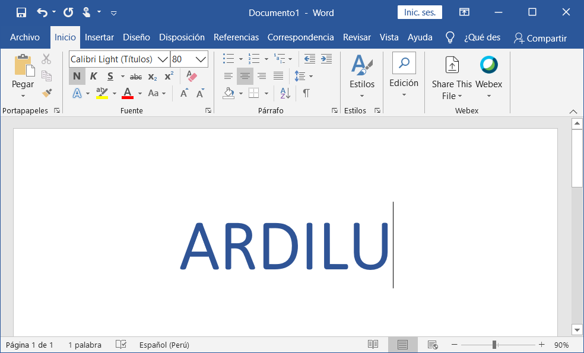
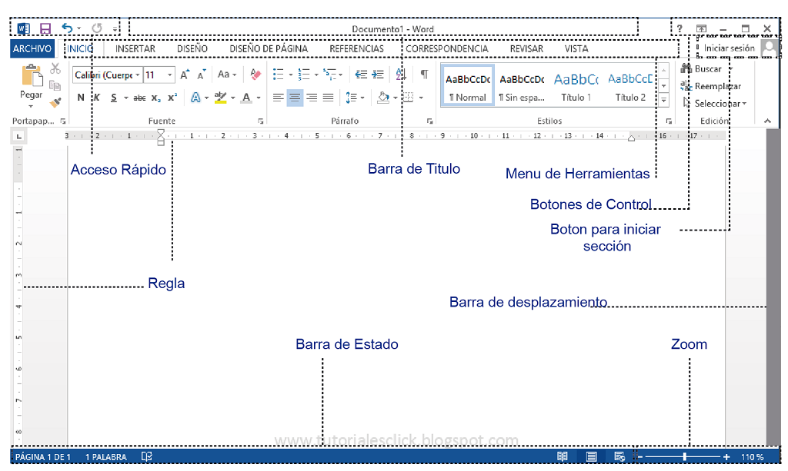
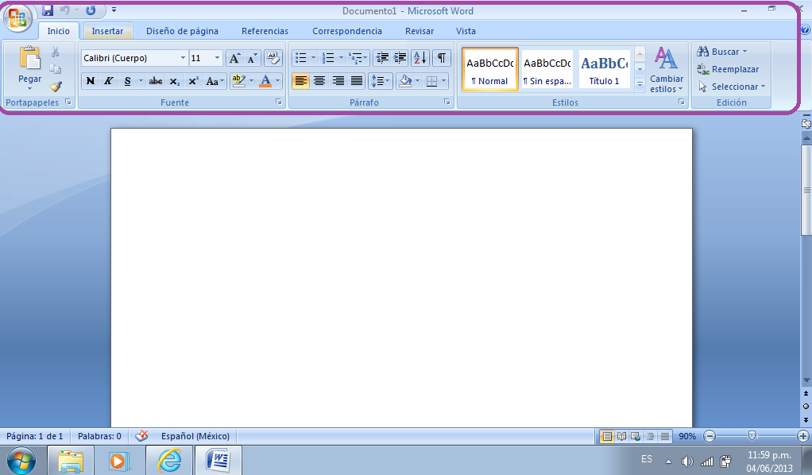

Si aún no conoces muy bien esta herramienta, aquí te explicamos qué es Microsoft Word y cuáles son sus principales características que lo han convertido en una de las aplicaciones más populares del mundo para el procesamiento de textos.
Microsoft Word es el procesador de textos más popular del mundo utilizado para “procesar” documentos: guardar, formatear, manipular, imprimir, compartir. Gracias a sus plantillas prediseñadas, es muy fácil escribir documentos desde cero.
En 1983, Microsoft diseñó y lanzó Microsoft Word bajo el nombre ‘Multi-Tool Word’, inicialmente para Xenix Systems. Más tarde, en 1989, Word 1.0 para Windows se lanzó como el primer procesador de texto en ofrecer una interfaz WYSIWYG (lo que ves es lo que obtienes).
Desde entonces, el software ha sido utilizado en todo el mundo para crear, editar y visualizar todo tipo de documentos de texto: cartas, folletos, certificados, currículums vítae, facturas de servicio, informes y más.

Actualmente, este primer programa informático de escritura gráfica del mundo forma parte de Microsoft Office. Está disponible para diferentes sistemas operativos de escritorio y móvil: Windows, macOS, iOS y Android.
Sin duda, una herramienta de primer nivel con potentes características de escritura, como el corrector ortográfico, el traductor, estilos de diseño, la opción para insertar imágenes y más.
Microsoft Word está diseñado para la creación y edición de documentos de texto. Ya sea que le des un uso doméstico, comercial o educativo, la aplicación te permite crear facturas, recibos, exámenes, cartas, entre otros documentos.
A la hora de escribir, los límites los pones tú. Puedes cambiar la fuente, el color, el tamaño y otras configuraciones de estilo para el texto usando las opciones integradas de la aplicación. Para aplicar estilo a varias secciones de texto de la misma manera, como aplicar un estilo uniforme a los títulos de una determinada manera, puede crear estilos que agrupen varias opciones de formato en una sola configuración.
Un usuario puede crear fácilmente cualquier documento, además de insertar hipervínculos, marcadores, pies de página, notas al pie y otras características similares en el documento y proporcionar más información al lector sobre el tema. Por seguridad, los usuarios también pueden usar una marca de agua. Incluso puede personalizar los gráficos, imágenes o fuentes según el requisito. También puede insertar tablas y columnas en el documento.
Las actualizaciones a menudo vienen con una interfaz muy atractiva con funciones más organizadas que se implementan constantemente para mejorar suite de ofimática. Por lo tanto, los usuarios ahora pueden aprovechar fácilmente sus funciones innovadoras, como el traductor y la búsqueda en la web sin salir de la aplicación.
Este software tiene todo lo necesario para ayudarlo a escribir con confianza, desde correcciones ortográficas y gramaticales, hasta sugerencias de escritura estilística. Los usuarios pueden trabajar con el documento para ayudar a otros a definir sus preferencias de idioma y opciones de acceso. También tiene una función de seguridad avanzada para evitar violaciones de datos.
Sin salir de su ventana, el usuario puede trabajar con otras aplicaciones de la suite de Office. Puede obtener diferentes elementos y textos de Powerpoint, y el usuario puede obtener información de varios sitios web y agregar materiales de investigación citados en documentos.
El formato .docx no solo es utilizado por Microsoft Word, sino también por otros procesadores de texto, como Libre Office, Open Office y otros. Este es un formato de archivo popular y ampliamente utilizado debido a las funciones de archivo editables. Así que no te preocupes si tienes un documentos .docx creado en otra aplicación, igual podrás abrirlo desde Word.
Con la ayuda de MS Word, las personas pueden diseñar documentos escolares y comerciales desde cero. También puede obtener una plantilla diseñada profesionalmente. Estas son algunas de las cosas que puedes crear con Microsoft Word: cartas, informe, propuesta, boletín de noticias, folleto, catálogo, cartel, volante, postal, banner, tarjeta de visita, factura, recibo, etiqueta postal, etc.

La barra de título es la parte donde se muestra el nombre del documento en el que se está trabajando. Por defecto lleva el título de “Documento”.
Esta barra de herramientas tiene los comandos que más se utilizan en el programa, tales como Deshacer, Guardar, Rehacer, Maximizar, Minimizar, Cerrar, entre otros.
La barra de menú tienes siete barras de herramientas con pestañas ubicadas de forma horizontal una encima de la otra las cuales tienen diferentes funciones. Se accede a ellas haciendo clic en las pestañas. Algunas de las opciones que se encuentran en la barra de menú son las siguientes:
Se ubica en la esquina superior derecha de la ventana.
El deslizador de zoom permite al usuario acercar o alejar el documento a su gusto.
Hay dos barras de desplazamiento, una es vertical y la otra es horizontal. La vertical está el extremo derecho de la ventana y la horizontal en la parte inferior, encima de la barra de estado. La barra vertical siempre está visible en el programa, en cambio la barra horizontal sólo aparece cuando la anchura del texto es más grande que el ancho de la pantalla.
Es útil para configurar el texto y las pestañas.

La barra de estado presenta la información referente al documento: el número total de páginas, número de la página actual, total de letras y palabras, notificación de errores, idioma, entre otros.
Enseña el documento de la forma en la que se verá al ser impreso.
Presenta el documento en pantalla completa para que se pueda leer de manera más fácil y cómoda.
Esta opción posibilita ver el documento como aparecería en un navegador de internet.
Presenta el documento con apariencia de esquema en el que las partidas aparecen sin el texto. Al moverse un encabezado, el texto adjunto se moverá también.
Presenta el documento con apariencia de esquema en el que las partidas aparecen sin el texto. Al moverse un encabezado, el texto adjunto se moverá también.
Esta opción es la más utilizada cuando se está editando el documento.